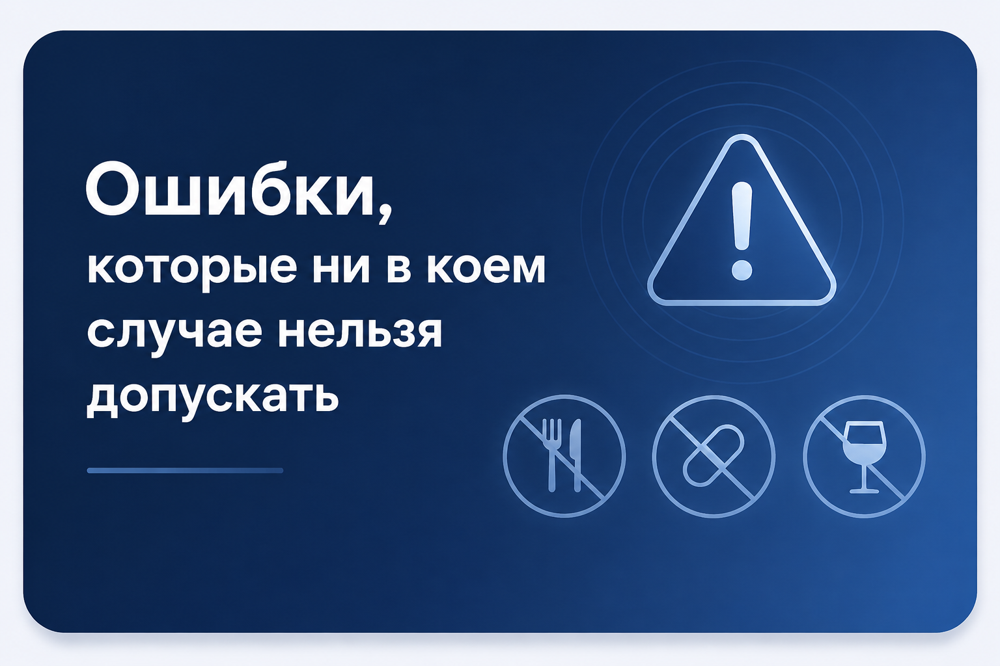
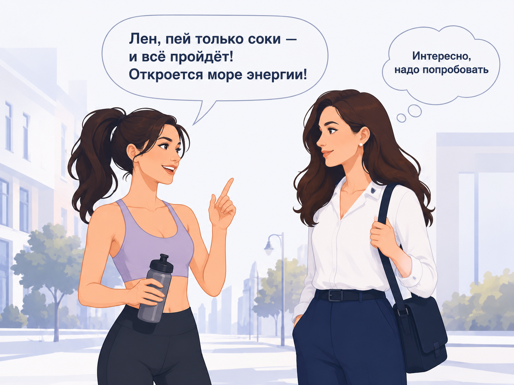
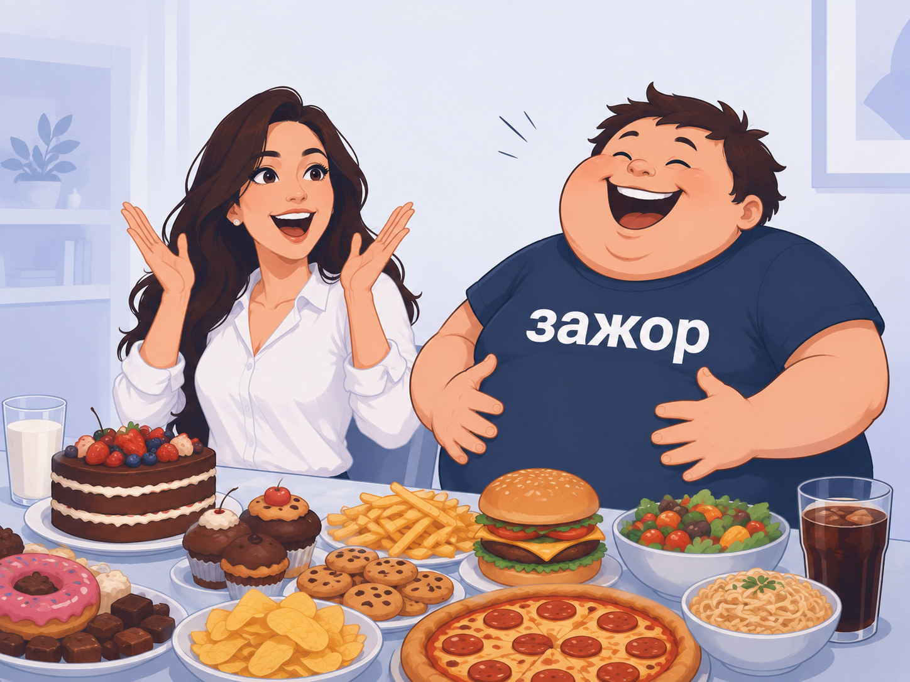

В предыдущем видео вы уже определились с термином детокс и узнали, что в той или иной степени интоксикацией ежедневно страдают 8 из 10 человек.
Тест показал, насколько лично ваш организм прямо сейчас перегружен выводом токсинов. Возможно, у вас возникла мысль пойти и начать применять уже известные вам способы очищения: голодание, клизма, противопаразитарная программа.

Знакомьтесь — Елена

Елена работает бухгалтером. Дома — двое детей. В свободное время листает соцсети, на выходных гуляет с семьёй и встречается с друзьями.
Лена страдает от постоянных головных болей, ей тяжело работать — особенно в период отчётностей. Постоянный стресс, раздражительность на детей и мужа…

Она замечает отёчность по утрам, быстрее устаёт, чем раньше, и как-то незаметно постарела внешне.
Совет подруги
Лена начала изучать YouTube в поисках решения: кто-то советует клизму и голодание, кто-то — убрать мясо, молочку, сахар и жареное. Но однажды по дороге на работу она встречает подругу Веру — фитнес-тренера.

Елена соглашается. Первый день соковой диеты тяжёлый, но на второй и третий становится легче — голова болит реже, появляется лёгкость и энергия.
Что происходит после диеты
Марафон жидкого питания заканчивается, и Лена возвращается к привычному: бутерброд на завтрак, быстрый перекус на работе, плотный семейный ужин дома.

Прошло пару дней — и Елена замечает, что ест всё больше и больше. Сладкое вместо 2–3 раз в неделю — теперь 5–7 раз, и отказаться кажется нереальным. Предыдущие симптомы не только возвращаются, но и усугубляются: головная боль, быстрая утомляемость, высыпания на лице. Ещё и живот начал болеть, режет, стул ухудшился.
Что Елена сделала неверно?

Когда Лена перешла на соки — ей стало легче: она дала внутренним органам отдохнуть, разгрузила пищеварение. Функция пищеварения забирает у тела много энергии, и лёгкое питание — это своего рода выходной для организма.
Но Лена не работала с функцией очищения организма. Когда она вернулась к прежнему питанию — организм так и не справлялся с выводом токсинов. Более того, она быстро заработала расстройство пищевого поведения, которое долго прорабатывают с психотерапевтом.
Как нужно было сделать правильно?
Елене нужно было не просто дать органам отдохнуть, а запустить функцию очищения — мягко и комфортно, работая со своим телом.
Правильную технологию очищения не сделают за вас никакие таблетки или медицинские препараты. Вы должны сами понять, что нужно делать — и делать это ежедневно. Минимум 7 дней, а затем при первых же симптомах — повторить.
Для того чтобы заняться своим здоровьем, нужно любить себя и быть смелым. Но когда вы слепо следуете рекомендациям из интернета — смелость граничит с безумием. За 8 лет практики я видел много таких ситуаций. Именно поэтому и пишу эти статьи — чтобы показать, как делать детокс мягко и эффективно.